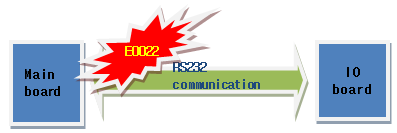
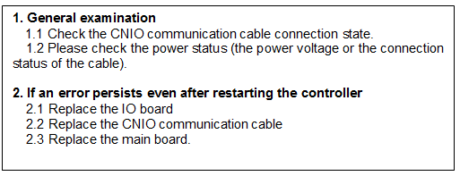
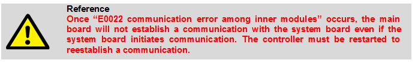
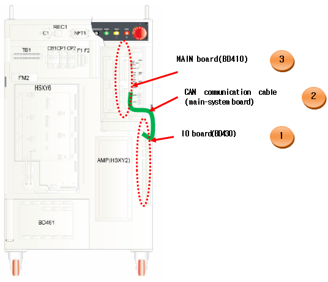
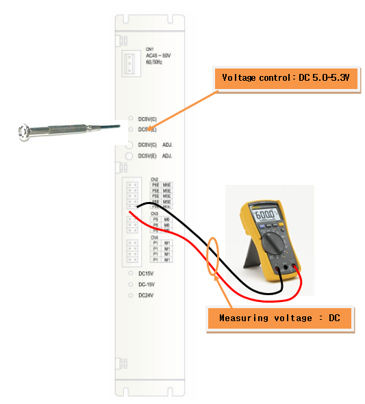

1.1.9.1. Outline
The IO board of the controller exchanges data with the mainboard through RS232 communication. The E0022 is the communication error code detected between the mainboard and the IO board.

Figure 5.18 Communication between the mainboard and the IO board
The IO board is a module that controls the input/output of the controller's power sequence. Once this error occurs, all functions related to this will be stopped, and the main board stops the communication. To reactivate all the functions, a controller must be restarted.
1.1.9.2. Causes and checking methods

1. General examination
If this error occurred while the system is normally operating, please examine the following for a start.

1.1 Check the communication cable (CNIO) connection state.
Please check if the communication cable (CNIO) between the main board and the system boards are well-connected. Please remove and reconnect the CNIO connectors of the main board and the system board, and check if an error persists, to check the connector's connection status.

Figure 5.19 Communication cable connection between the main board and the IO board
1.2 Please check the power status (the power voltage or the connection status of the cable).
Please check if a DC 5 V control power is being supplied to the system board properly. If there is a problem with power, this error may occur as the system board will not operate.
Please check if the DC 5 V control power from output terminal in the SMPS is in the range of 5.0–5.3 V. If the voltage is out of this range, it may affect the communication. Checkpoints are as in the diagram below, and if the voltage is out of range, please configure it to a range of 5.0–5.3 V from the SMPS.

Figure 5.20 Measuring a voltage of DC 5 V and the controlling method
2. If an error persists even after restarting the controller
If the error message still appears even after rebooting the controller power, replace the board or cable in the following order to check for any problem.
2.1 Replace the IO board.
2.2 Replace the CNIO cable.
2.3 Replace the MAIN board.